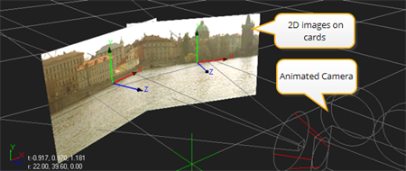

用导航打开主题
一些数字合成系统支持严格的二维工作流。 Nuke 相比之下，产品提供了一个强大的 3D 工作空间，允许您创建和渲染由多边形模型、卡片 (用图像纹理处理的平面) 、相机、灯光和纹理组成的复杂场景。
这个 3D 工作区有无数的用途，最简单的是生成平铺场景。这些场景的 2D 图像平面排列成弯曲的形状，然后通过动画相机渲染出来，给人一种无缝环境的错觉。

简单的平底锅和瓷砖场景。
的 3D 合成 章解释了如何充分利用 Nuke 的 3D 工作空间。